Fırınımızın Tarihçesi
Yıldırım Taş Fırını, 1991`den günümüze gelen unlu mamul geleneğini aynı titizlik ve doğallıkla sürdürmektedir. Kurulduğu günden bu yana odun ateşinin verdiği eşsiz aroma, kaliteli hammadde seçimi ve usta ellerde yoğurulan hamur anlayışından asla ödün vermemiştir. Amacımız, geçmişin lezzet mirasını modern hijyen standartlarıyla harmanlayarak müşterilerimize en taze ve sağlıklı ürünleri sunmaktır.
Ekmek Çeşitlerimiz

Ekşi Mayalı Ekmek
İçindekiler: Tam buğday unu, su, doğal ekşi maya, kaya tuzu.
Yapılışı: Uzun süreli fermente süreçten geçirilerek taş fırında odun ateşinde pişirilir.

Mısır Ekmeği
İçindekiler: Mısır unu, buğday unu, su, zeytinyağı, tuz.
Yapılışı: Yoğrulan hamur geleneksel kalıplarda yüksek ısıdaki taş tabanda pişmeye bırakılır.

Tam Buğday Ekmeği
İçindekiler: %100 tam buğday unu, su, maya, tuz.
Yapılışı: Kabuklu kepekli un yapısı bozulmadan yoğrulur ve fırına verilir.
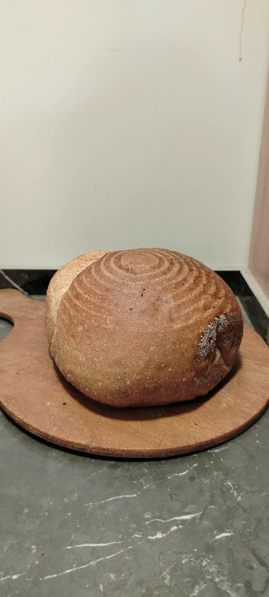
Çavdar Ekmeği
İçindekiler: Çavdar unu, az miktarda buğday unu, su, maya, tuz.
Yapılışı: Yoğun lifli çavdar hamuru özel tekniklerle şekillendirilerek pişirilir.
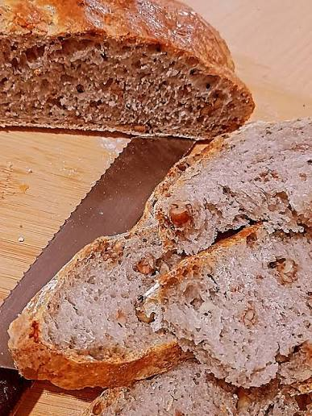
Baharatlı Ekmek
İçindekiler: Buğday unu, kekik, pul biber, zeytinyağı, su, tuz.
Yapılışı: Hamur içerisine özel baharatlar harmanlanarak fırın kokusuyla buluşturulur.
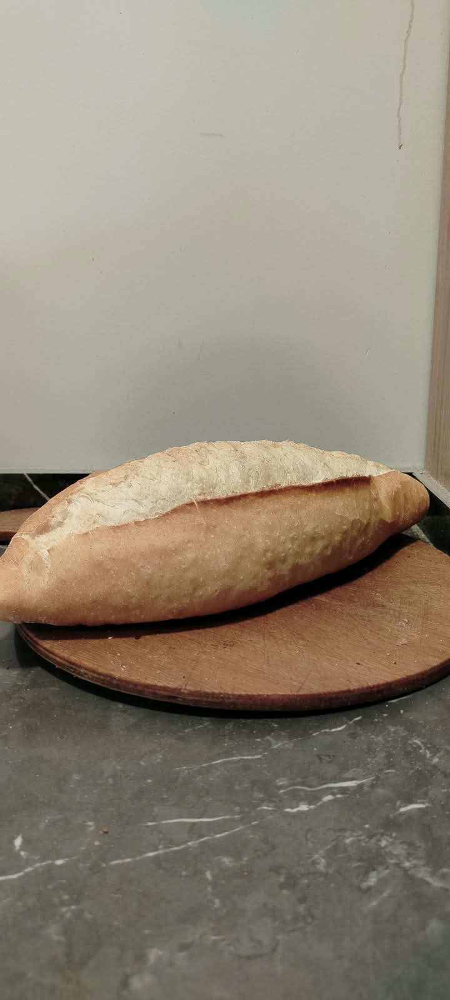
Somun Ekmek
İçindekiler: Klasik buğday unu, su, maya, tuz.
Yapılışı: Günlük taze tüketim için klasik usulde yoğrulup fırında kabartılır.

Trabzon Ekmeği
İçindekiler: Yüksek kaliteli buğday unu, su, ekşi maya, kaya tuzu.
Yapılışı: Büyük yuvarlak formda hazırlanıp kalın kabuklu olacak şekilde odun ateşinde pişirilir.

Cevizli Ekmek
İçindekiler: Tam buğday unu, kırılmış yerli ceviz içi, ekşi maya, su, kaya tuzu.
Yapılışı: İri parçalı ceviz içleri hamurla homojen şekilde yoğrulup taş tabanda ağır ateşte pişirilir.

Siyez Ekmeği
İçindekiler: Ata tohumu siyez buğdayı unu, doğal ekşi maya, içme suyu, kaya tuzu.
Yapılışı: Düşük glütenli geleneksel siyez hamuru uzun süre dinlendirilip odun ateşinde pişirilir.

Balkan Ekmeği
İçindekiler: Özel harman buğday unu, çavdar unu, ekşi maya, su, tuz.
Yapılışı: Yoğun dokulu hamur uzun fermantasyon sonrası yüksek nemli taş fırında kabuğu çıtırlaşana dek pişirilir.

Kabak Çekirdekli Ekmek
İçindekiler: Tam buğday unu, kavrulmamış iç kabak çekirdeği, ekşi maya, su, tuz.
Yapılışı: Hamur içine ve dış kabuğuna bol miktarda kabak çekirdeği eklenerek taş tabanda fırınlanır.
Poğaça ve Açma Çeşitlerimiz
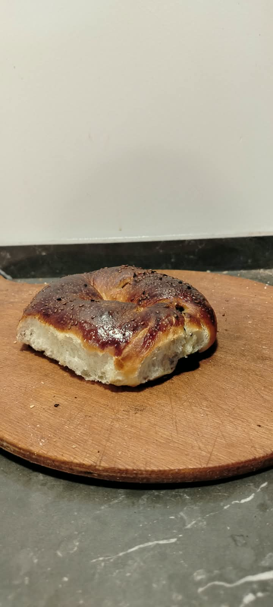
Zeytinli Poğaça
İçindekiler: Buğday unu, tereyağı, süt, yumurta, ayıklanmış siyah zeytin ezmesi, maya.
Yapılışı: Yumuşak mayalı hamurun içine siyah zeytin dolgusu yerleştirilip üzerine yumurta sarısı sürülerek pişirilir.
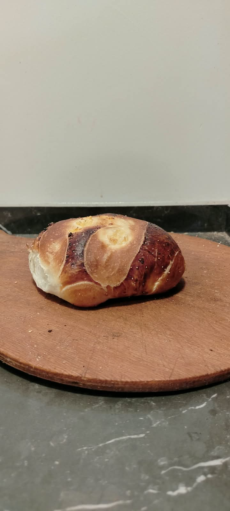
Patatesli Poğaça
İçindekiler: Buğday unu, tereyağı, yoğurt, haşlanmış patates, soğan, karabiber, tuz.
Yapılışı: Hafif baharatlarla kavrulmuş patates harcı hamurla buluşturulup fırında nar gibi kızartılır.
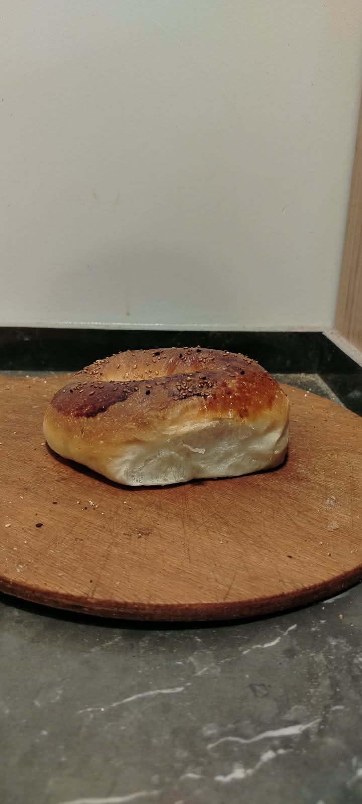
Boş Açma
İçindekiler: Buğday unu, ılık süt, tereyağı, sıvı yağ, yaş maya, şeker, tuz.
Yapılışı: Tereyağı ile kat kat açılıp burgu şekli verilen hamur, tepsi mayası aldıktan sonra yumuşacık pişirilir.
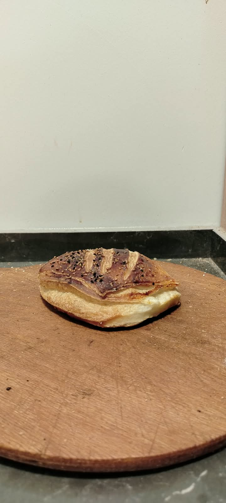
Kete
İçindekiler: Buğday unu, tereyağı, süt, yumurta, kavrulmuş un iç harcı, tuz.
Yapılışı: Katları tek tek yağlanan hamurun arasına tereyağında kavrulmuş un eklenerek geleneksel usulde fırınlanır.
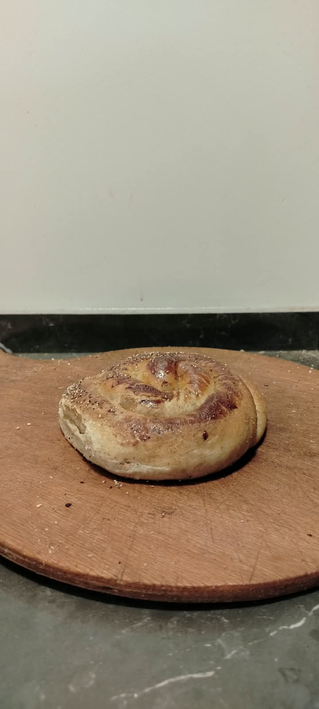
Haşhaşlı Çörek
İçindekiler: Buğday unu, süt, sıvı yağ, dövülmüş sarı haşhaş ezmesi, maya, şeker.
Yapılışı: İnce açılan hamur katlarının arasına bol haşhaş ezmesi sürülüp rulo yapılarak dilimlenir ve pişirilir.
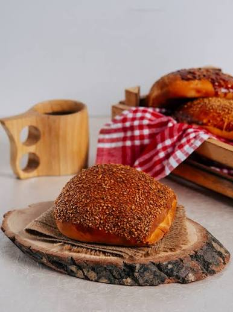
Salamlı Poğaça
İçindekiler: Buğday unu, tereyağı, süt, yumurta, dana salam dilimleri, maya, tuz.
Yapılışı: Dinlendirilmiş poğaça hamurunun içerisine dana salam dilimleri yerleştirilerek sıcak fırında pişirilir.
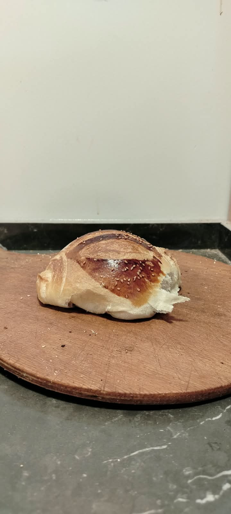
Kaşarlı Poğaça
İçindekiler: Buğday unu, tereyağı, süt, yumurta, taze kaşar peyniri, maya, tuz.
Yapılışı: İçine bol taze kaşar peyniri eklenen hamurlar, üzeri kızarana ve peyniri eriyene dek fırınlanır.
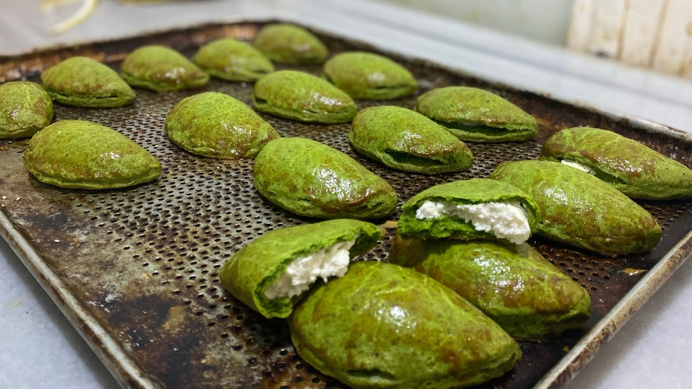
Ispanaklı Poğaça
İçindekiler: Buğday unu, tereyağı, yoğurt, taze yaprak ıspanak, beyaz peynir, soğan, tuz.
Yapılışı: İnce kıyılmış taze ıspanak ve peynir harcı mayalı hamurun içine yerleştirilerek fırında pişirilir.
Simit Çeşitlerimiz

Tava Simidi
İçindekiler: Buğday unu, tereyağı, süt, mahlep, yumurta sarısı, kavrulmuş susam, tuz.
Yapılışı: Tereyağı ve mahlep ile yoğrulan yumuşak hamur halka formunda hazırlanıp tepside nar gibi kızarana dek pişirilir.

Ankara Simidi
İçindekiler: Sert buğday unu, su, maya, koyu üzüm pekmezi, bol kavrulmuş susam, tuz.
Yapılışı: İnce örülen hamur halkaları yoğun pekmezli suya batırılıp bol susama bulanarak yüksek ısılı taş tabanda çıtır pişirilir.